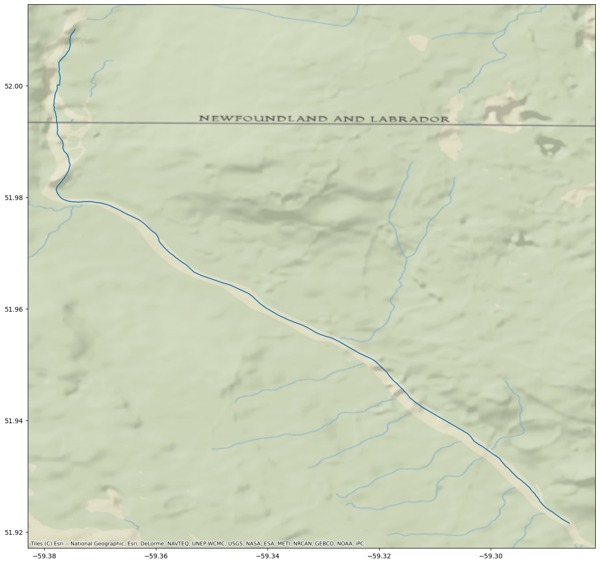
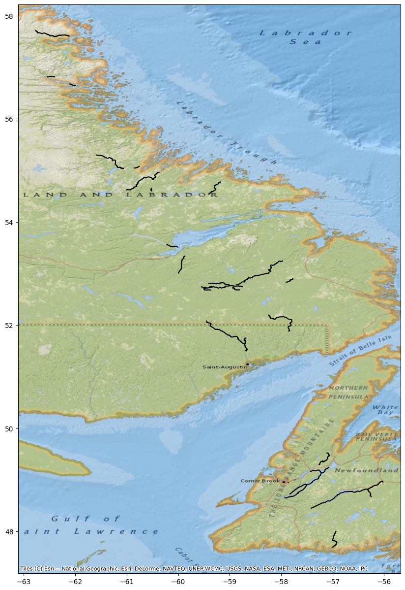

import os
import glob
from pathlib import Path
import numpy as np
import pandas as pd
import geopandas as gpd
import matplotlib.pyplot as plt
import contextily as cx
import zipfile
import earthaccess
from earthaccess import Auth, DataCollections, DataGranules, StoreSWOT North American Continent Hydrology Dataset
Finding ways to visualize SWOT Hydrology River Shapefile Dataset
Authored by Nicholas Tarpinian, PO.DAAC
Summary
The following tutorial is looking to explore geospatial libraries and visualizing vector datasets without the use of a GIS desktop software. Specifically looking at the latest Surface Water and Ocean Topography (SWOT) river reach hydrology dataset.
Requirements
1. Compute environment
- Local compute environment e.g. laptop, server: this tutorial can be run on your local machine.
- Utilizing Anaconda Navigator to create your enviroments. Accessing the Conda-Forge channel to install geopsatial libraries, e.g. GDAL and GeoPandas.
2. Earthdata Login
An Earthdata Login account is required to access data, as well as discover restricted data, from the NASA Earthdata system. Thus, to access NASA data, you need Earthdata Login. Please visit https://urs.earthdata.nasa.gov to register and manage your Earthdata Login account. This account is free to create and only takes a moment to set up.
Learning Objectives:
- Accessing SWOT shapefile hydrology dataset through earthaccess and visualizing it locally.
- Visualizing the dataset through the use of geospatial libraries; including Geopandas & Matplotlib.
- Visualzing either a single river reach or merging multiple reaches to a single shapefile.
- Querying specific variables of interest.
Import libraries
Authentication with earthaccess
In this notebook, we will be calling the authentication in the below cell.
auth = earthaccess.login()Search using earthaccess for SWOT River Reaches
Each dataset has it’s own unique collection concept ID. For this dataset it is SWOT_L2_HR_RiverSP_2.0. We don’t need 1000+ files, we just want the river reach files over North America. SWOT files come in “reach†and “node†versions in the same collection, here we want the 10km reaches rather than the nodes. We will also only get files for North America, or ‘NA’ via wildcard search.
results = earthaccess.search_data(short_name = 'SWOT_L2_HR_RIVERSP_2.0',
temporal = ('2024-02-01 00:00:00', '2024-02-29 23:59:59'), # can also specify by time
granule_name = '*Reach*_NA_*') # here we filter by Reach files (not node), continent code=NAGranules found: 192Download the Data into a folder
earthaccess.download(results, "../datasets/data_downloads/SWOT_River_Feb2024")Unzip shapefiles to existing folder
folder = Path("../datasets/data_downloads/SWOT_River_Feb2024")
for item in os.listdir(folder): # loop through items in dir
if item.endswith(".zip"): # check for ".zip" extension
zip_ref = zipfile.ZipFile(f"{folder}/{item}") # create zipfile object
zip_ref.extractall(folder) # extract file to dir
zip_ref.close() # close fileOpening a Single Shapefile
Using Geopandas to open & read a single shapefile. (Select desired single pass from list with path to downloaded shapefile)
River = gpd.read_file(folder / 'SWOT_L2_HR_RiverSP_Reach_010_380_NA_20240207T132630_20240207T132640_PIC0_01.shp')
River| reach_id | time | time_tai | time_str | p_lat | p_lon | river_name | wse | wse_u | wse_r_u | ... | p_wid_var | p_n_nodes | p_dist_out | p_length | p_maf | p_dam_id | p_n_ch_max | p_n_ch_mod | p_low_slp | geometry | |
|---|---|---|---|---|---|---|---|---|---|---|---|---|---|---|---|---|---|---|---|---|---|
| 0 | 72302000011 | 7.606277e+08 | 7.606278e+08 | 2024-02-07T13:29:01Z | 48.945799 | -57.862132 | Humber River | 4.236410e+01 | 8.633000e-01 | 8.585900e-01 | ... | 675.648 | 10 | 2135.645 | 1984.456750 | -1.000000e+12 | 0 | 1 | 1 | 0 | LINESTRING (-57.87428 48.95038, -57.87387 48.9... |
| 1 | 72302000021 | 7.606277e+08 | 7.606278e+08 | 2024-02-07T13:29:01Z | 48.947712 | -57.846809 | Humber River | -1.000000e+12 | -1.000000e+12 | -1.000000e+12 | ... | 217.623 | 4 | 3008.992 | 873.346819 | -1.000000e+12 | 0 | 1 | 1 | 0 | LINESTRING (-57.85082 48.94446, -57.85058 48.9... |
| 2 | 72302000043 | 7.606277e+08 | 7.606278e+08 | 2024-02-07T13:29:01Z | 48.973874 | -57.788332 | Humber River | 5.920900e+00 | 1.440190e+00 | 1.437370e+00 | ... | 7900.098 | 46 | 12109.956 | 9100.964613 | -1.000000e+12 | 0 | 2 | 1 | 0 | LINESTRING (-57.83865 48.95172, -57.83824 48.9... |
| 3 | 72302000051 | 7.606277e+08 | 7.606278e+08 | 2024-02-07T13:29:01Z | 48.995478 | -57.730291 | Humber River | 3.668880e+01 | 9.367000e-02 | 2.596000e-02 | ... | 397.512 | 7 | 13444.660 | 1334.703115 | -1.000000e+12 | 0 | 1 | 1 | 0 | LINESTRING (-57.73845 48.99230, -57.73804 48.9... |
| 4 | 72302000063 | 7.606277e+08 | 7.606278e+08 | 2024-02-07T13:29:01Z | 48.997805 | -57.715888 | Humber River | 2.784380e+01 | 9.033000e-02 | 7.670000e-03 | ... | 1089.674 | 6 | 14714.137 | 1269.477822 | -1.000000e+12 | 0 | 1 | 1 | 0 | LINESTRING (-57.72209 48.99569, -57.72168 48.9... |
| ... | ... | ... | ... | ... | ... | ... | ... | ... | ... | ... | ... | ... | ... | ... | ... | ... | ... | ... | ... | ... | ... |
| 210 | 72350800071 | 7.606277e+08 | 7.606277e+08 | 2024-02-07T13:28:11Z | 51.791094 | -58.985455 | no_data | 9.711690e+01 | 3.278100e+00 | 3.276860e+00 | ... | 821.862 | 82 | 119786.053 | 16448.306136 | -1.000000e+12 | 0 | 2 | 1 | 0 | LINESTRING (-58.89330 51.77895, -58.89374 51.7... |
| 211 | 72350800081 | 7.606277e+08 | 7.606277e+08 | 2024-02-07T13:28:10Z | 51.886956 | -59.172704 | no_data | 1.168453e+02 | 7.567680e+00 | 7.567140e+00 | ... | 2599.684 | 99 | 139644.759 | 19858.706858 | -1.000000e+12 | 0 | 2 | 1 | 0 | LINESTRING (-59.07129 51.82866, -59.07148 51.8... |
| 212 | 72350800091 | 7.606277e+08 | 7.606277e+08 | 2024-02-07T13:28:01Z | 51.966072 | -59.344178 | no_data | 9.837220e+01 | 1.775170e+00 | 1.772890e+00 | ... | 2313.937 | 64 | 152412.397 | 12767.637572 | -1.000000e+12 | 0 | 2 | 1 | 0 | LINESTRING (-59.37449 52.01016, -59.37465 52.0... |
| 213 | 72350800101 | 7.606277e+08 | 7.606277e+08 | 2024-02-07T13:28:01Z | 52.045314 | -59.409170 | Saint-Augustin River | 1.425316e+02 | 7.325890e+00 | 7.325330e+00 | ... | 590.479 | 68 | 166028.213 | 13615.816320 | -1.000000e+12 | 0 | 1 | 1 | 0 | LINESTRING (-59.37465 52.00988, -59.37449 52.0... |
| 214 | 72350800111 | 7.606277e+08 | 7.606277e+08 | 2024-02-07T13:28:11Z | 51.696292 | -58.702223 | no_data | 1.045083e+02 | 1.271013e+01 | 1.270981e+01 | ... | 1257.012 | 97 | 79887.666 | 19340.975021 | -1.000000e+12 | 0 | 2 | 1 | 0 | LINESTRING (-58.72011 51.63638, -58.72011 51.6... |
215 rows × 127 columns
Plotting a Shapefile
Using Matplotlib to plot the shapefile, then adding a basemap for context using the library Contextily.
Contextily offers a list of basemap providers that can be easily visualized.
https://contextily.readthedocs.io/en/latest/intro_guide.html
fig, ax = plt.subplots(figsize=(25,15))
River.plot(ax=ax, color='black')
cx.add_basemap(ax, crs=River.crs, source=cx.providers.OpenTopoMap)
Shapefile Attribute Visualization
Shapefiles have various attributes or variables with each column signifiying individual data values.
Previously, we plotted by showcasing the full path of the river reach on the map.
You can also plot a shapefile based on a specific variable.
Within Matplotlib you can specifiy the column parameter based on the column within the datasets attributes.
For the example below, we will look at the column ‘wse’ which stands for water surface elevation.
#First, we set all -999999999999 values to nan so that the color variation shows in the values.
River["wse"] = River.wse.apply(lambda x: x if x > -10 else np.nan)fig, ax = plt.subplots(figsize=(15,15))
River.plot(column='wse', ax=ax, legend=True, cmap='viridis')Querying a Shapefile
If you want to search for a specific reach id or a specific length of river reach that is possible through a spatial query using Geopandas.
Utilizing comparison operators (>, <, ==, >=, <=).
Query = River.query("reach_id == '72350800091'")
Query| reach_id | time | time_tai | time_str | p_lat | p_lon | river_name | wse | wse_u | wse_r_u | ... | p_wid_var | p_n_nodes | p_dist_out | p_length | p_maf | p_dam_id | p_n_ch_max | p_n_ch_mod | p_low_slp | geometry | |
|---|---|---|---|---|---|---|---|---|---|---|---|---|---|---|---|---|---|---|---|---|---|
| 212 | 72350800091 | 7.606277e+08 | 7.606277e+08 | 2024-02-07T13:28:01Z | 51.966072 | -59.344178 | no_data | 98.3722 | 1.77517 | 1.77289 | ... | 2313.937 | 64 | 152412.397 | 12767.637572 | -1.000000e+12 | 0 | 2 | 1 | 0 | LINESTRING (-59.37449 52.01016, -59.37465 52.0... |
1 rows × 127 columns
fig, ax = plt.subplots(figsize=(25,15))
Query.plot(ax=ax, legend=True)
cx.add_basemap(ax, crs=River.crs, source=cx.providers.Esri.NatGeoWorldMap)
You can specify river reaches that have a water surface elevation greater than 35 meters.
WSE = River.query('wse > 35')
WSE| reach_id | time | time_tai | time_str | p_lat | p_lon | river_name | wse | wse_u | wse_r_u | ... | p_wid_var | p_n_nodes | p_dist_out | p_length | p_maf | p_dam_id | p_n_ch_max | p_n_ch_mod | p_low_slp | geometry | |
|---|---|---|---|---|---|---|---|---|---|---|---|---|---|---|---|---|---|---|---|---|---|
| 0 | 72302000011 | 7.606277e+08 | 7.606278e+08 | 2024-02-07T13:29:01Z | 48.945799 | -57.862132 | Humber River | 42.3641 | 0.86330 | 0.85859 | ... | 675.648 | 10 | 2135.645 | 1984.456750 | -1.000000e+12 | 0 | 1 | 1 | 0 | LINESTRING (-57.87428 48.95038, -57.87387 48.9... |
| 3 | 72302000051 | 7.606277e+08 | 7.606278e+08 | 2024-02-07T13:29:01Z | 48.995478 | -57.730291 | Humber River | 36.6888 | 0.09367 | 0.02596 | ... | 397.512 | 7 | 13444.660 | 1334.703115 | -1.000000e+12 | 0 | 1 | 1 | 0 | LINESTRING (-57.73845 48.99230, -57.73804 48.9... |
| 9 | 72302000111 | 7.606277e+08 | 7.606278e+08 | 2024-02-07T13:29:00Z | 49.170904 | -57.404776 | no_data | 118.9760 | 0.83515 | 0.83029 | ... | 105.642 | 28 | 50331.655 | 5596.729779 | -1.000000e+12 | 0 | 1 | 1 | 0 | LINESTRING (-57.43636 49.16979, -57.43570 49.1... |
| 10 | 72302000123 | 7.606277e+08 | 7.606278e+08 | 2024-02-07T13:29:00Z | 49.177845 | -57.348725 | no_data | 116.7355 | 0.09589 | 0.03309 | ... | 35547.561 | 20 | 54269.288 | 3937.633107 | -1.000000e+12 | 0 | 2 | 1 | 0 | LINESTRING (-57.37279 49.17719, -57.37255 49.1... |
| 11 | 72302000131 | 7.606277e+08 | 7.606278e+08 | 2024-02-07T13:29:01Z | 49.171135 | -57.263679 | no_data | 92.1803 | 1.43050 | 1.42767 | ... | 500301.988 | 61 | 66530.524 | 12261.235771 | -1.000000e+12 | 0 | 4 | 1 | 0 | LINESTRING (-57.32502 49.17382, -57.32461 49.1... |
| ... | ... | ... | ... | ... | ... | ... | ... | ... | ... | ... | ... | ... | ... | ... | ... | ... | ... | ... | ... | ... | ... |
| 210 | 72350800071 | 7.606277e+08 | 7.606277e+08 | 2024-02-07T13:28:11Z | 51.791094 | -58.985455 | no_data | 97.1169 | 3.27810 | 3.27686 | ... | 821.862 | 82 | 119786.053 | 16448.306136 | -1.000000e+12 | 0 | 2 | 1 | 0 | LINESTRING (-58.89330 51.77895, -58.89374 51.7... |
| 211 | 72350800081 | 7.606277e+08 | 7.606277e+08 | 2024-02-07T13:28:10Z | 51.886956 | -59.172704 | no_data | 116.8453 | 7.56768 | 7.56714 | ... | 2599.684 | 99 | 139644.759 | 19858.706858 | -1.000000e+12 | 0 | 2 | 1 | 0 | LINESTRING (-59.07129 51.82866, -59.07148 51.8... |
| 212 | 72350800091 | 7.606277e+08 | 7.606277e+08 | 2024-02-07T13:28:01Z | 51.966072 | -59.344178 | no_data | 98.3722 | 1.77517 | 1.77289 | ... | 2313.937 | 64 | 152412.397 | 12767.637572 | -1.000000e+12 | 0 | 2 | 1 | 0 | LINESTRING (-59.37449 52.01016, -59.37465 52.0... |
| 213 | 72350800101 | 7.606277e+08 | 7.606277e+08 | 2024-02-07T13:28:01Z | 52.045314 | -59.409170 | Saint-Augustin River | 142.5316 | 7.32589 | 7.32533 | ... | 590.479 | 68 | 166028.213 | 13615.816320 | -1.000000e+12 | 0 | 1 | 1 | 0 | LINESTRING (-59.37465 52.00988, -59.37449 52.0... |
| 214 | 72350800111 | 7.606277e+08 | 7.606277e+08 | 2024-02-07T13:28:11Z | 51.696292 | -58.702223 | no_data | 104.5083 | 12.71013 | 12.70981 | ... | 1257.012 | 97 | 79887.666 | 19340.975021 | -1.000000e+12 | 0 | 2 | 1 | 0 | LINESTRING (-58.72011 51.63638, -58.72011 51.6... |
116 rows × 127 columns
fig, ax = plt.subplots(figsize=(25,15))
WSE.plot(ax=ax, color='black')
cx.add_basemap(ax, crs=River.crs, source=cx.providers.Esri.NatGeoWorldMap)
Merging multiple reaches to a single shapefile
- If you have multiple River Reaches or Nodes in a folder, it is possible to visualize all on a single map.
- Utilizing both Glob and Pathlib libraries to read the folder, then using Pandas concat to merge the reaches to its own variable.
# State filename extension to look for within folder, in this case .shp which is the shapefile
shapefiles = folder.glob("*.shp")
# Merge/Combine multiple shapefiles in folder into one
gdf = pd.concat([
gpd.read_file(shp)
for shp in shapefiles
]).pipe(gpd.GeoDataFrame)
# Export merged geodataframe into shapefile
gdf.to_file(folder / 'SWOTReaches_Feb.shp')fig, ax = plt.subplots(figsize=(25,15))
gdf.plot(ax=ax, color='black')
cx.add_basemap(ax, crs=gdf.crs, source=cx.providers.OpenTopoMap)